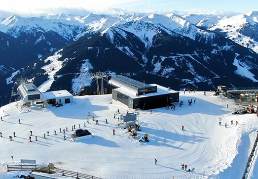

1. Ski Arlberg
De plek Ski Arlberg heeft wel 300km aan pistes, een hoogte van 1300 tot 2806 meter en heeft wel 85 skiliften. Dit gebied is nu officieel het grootste aaneengesloten skigebied van Oostenrijk. Ideaal voor skiliefhebbers. Nu er drie nieuwe skiliften zijn, zijn alle skigebieden van Arlberg met elkaar verbonden. Je kunt nu ook helemaal skiën richting St. Anton am Arlberg en Lech am Arlberg. Ook de dorpjes in dit skigebied houden hun charme. Lech Zürs am Arlberg is verkozen tot “Best of the Alps” en is daarmee één van de elf unieke dorpen in de Alpen.
2. SkiWelt Wilder Kaiser-Brixental
SkiWelt Wilder Kaiser-Brixental heeft wel 270 km aan pistes! Het gebied heeft 82 liften en meer dan 80 gezellige berghutten. Het gebied is van 620 tot 1957 meter hoog en valt dus mee hoe hoog het is. Je vindt hier de bekende dorpen Ellmau, Söll, Westendorf, Brixem im Thale en Scheffau. In dit skigebied kun je geweldige skitochten maken en is dit het perfecte gebied voor beginners en kinderen. Voor kinderen is dit ideaal met de leuke funparks en verlichte rodelbanen. Het besneeuwing systeem is zeer goed en is het hier ook nog dus sneeuwzeker.

3. Skicircus Saalbach Hinterglemm
Saalbach Hinterglemm heeft 270 km aan pistes, 70 skiliften en wel 60 gezellige skihutten. Het gebied is wel van 834 tot 2096 meter hoog. Het behoort tot een van de meest gevarieerde skigebieden in Oostenrijk. Je kunt dit gebied vooral ook herkennen aan de goed geprepareerde, brede pistes. Buitenom het skiën zijn hier nog meer activiteiten te doen. Je kunt hier rodelen, met de paardenslee of in de avond skiën.
